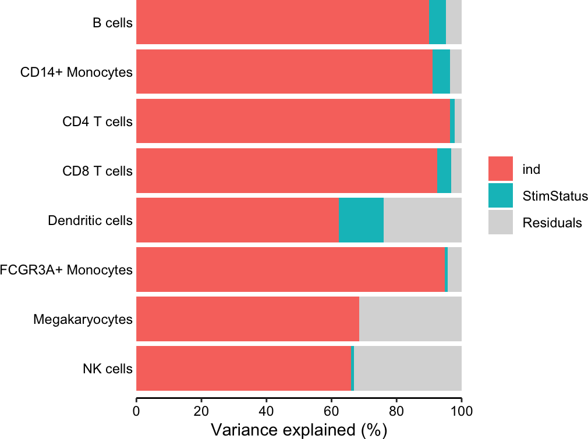
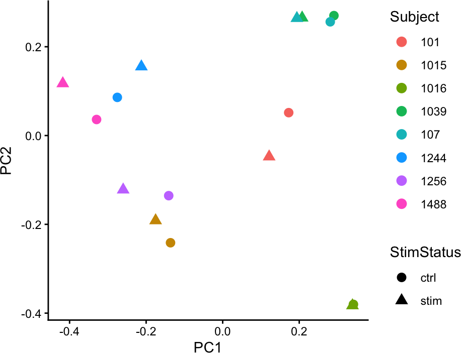
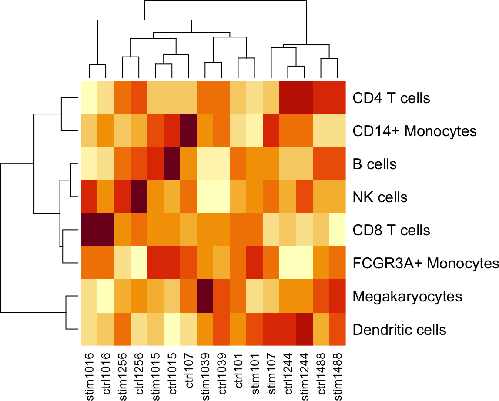
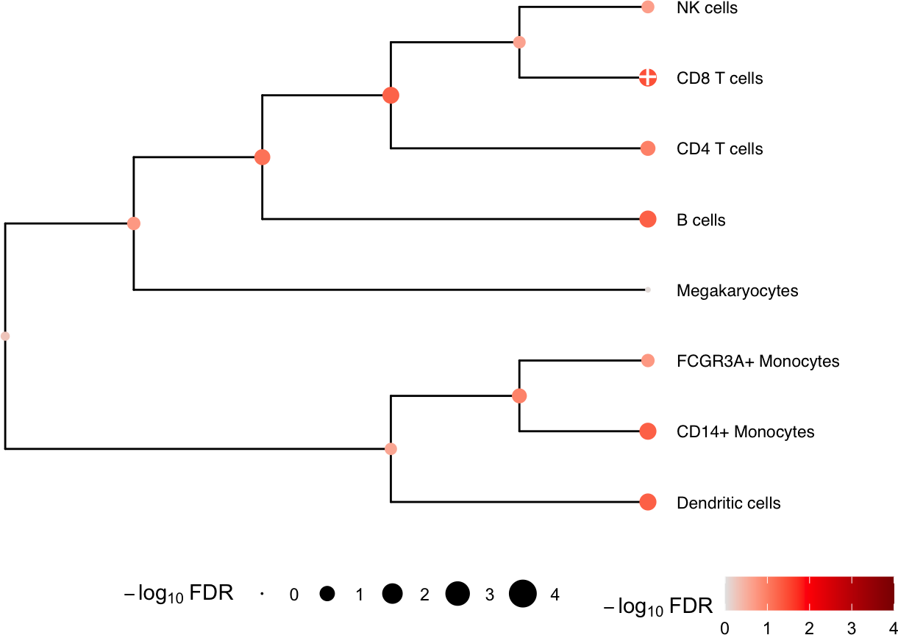
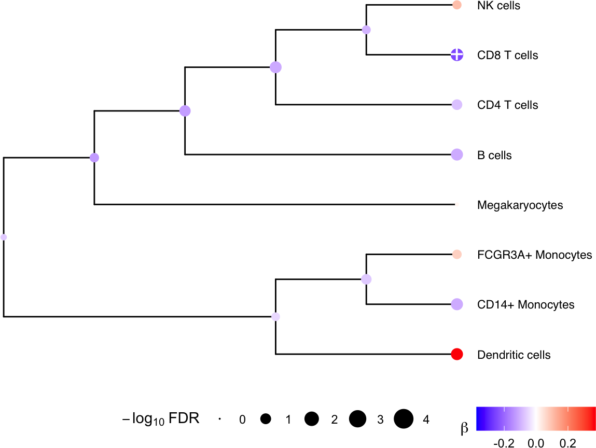
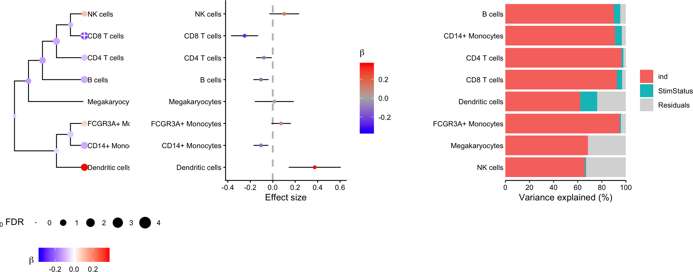

Using crumblr in practice
Developed by Gabriel Hoffman
Run on 2026-07-06 12:37:16.216965
Source:vignettes/crumblr.Rmd
crumblr.RmdIntroduction
Changes in cell type composition play an important role in health and
disease. Recent advances in single cell technology have enabled
measurement of cell type composition at increasing cell lineage
resolution across large cohorts of individuals. Yet this raises new
challenges for statistical analysis of these compositional data to
identify changes associated with a phenotype. We introduce
crumblr, a scalable statistical method for analyzing count
ratio data using precision-weighted linear models incorporating random
effects for complex study designs. Uniquely, crumblr
performs tests of association at multiple levels of the cell lineage
hierarchy using multivariate regression to increase power over tests of
a single cell component. In simulations, crumblr increases
power compared to existing methods, while controlling the false positive
rate.
The crumblr package integrates with the variancePartition
and dreamlet
packages in the Bioconductor ecosystem.
Here we consider counts for 8 cell types from quantified using single cell RNA-seq data from unstimulated and interferon β stimulated PBMCs from 8 subjects (Kang, et al., 2018).
The functions here incorporate the precision weights:
Installation
To install this package, start R and enter:
# 1) Make sure Bioconductor is installed
if (!require("BiocManager", quietly = TRUE)) {
install.packages("BiocManager")
}
# 2) Install crumblr and dependencies:
# From Bioconductor
BiocManager::install("crumblr")Analysis workflow
Process data
Here we evaluate whether the observed cell proportions change in response to interferon β. Given the results here, we cannot reject the null hypothesis that interferon β does not affect the cell type proportions.
library(crumblr)
# Load cell counts, clustering and metadata
# from Kang, et al. (2018) https://doi.org/10.1038/nbt.4042
data(IFNCellCounts)
# Apply crumblr transformation
# cobj is an EList object compatable with limma workflow
# cobj$E stores transformed values
# cobj$weights stores precision weights
# corresponding to the regularized inverse variance
cobj <- crumblr(df_cellCounts)Variance partitioning
Decomposing the variance illustrates that more variation is explained by subject than stimulation status.
library(variancePartition)
# Partition variance into components for Subject (i.e. ind)
# and stimulation status, and residual variation
form <- ~ (1 | ind) + (1 | StimStatus)
vp <- fitExtractVarPartModel(cobj, form, info)
# Plot variance fractions
fig.vp <- plotPercentBars(vp)
fig.vp
PCA
Performing PCA on the transformed cell counts indicates that the
samples cluster based on subject rather than stimulation status. Here,
we use standardize() so that each observation has
approximately equal variance (i.e. homoscedasticity) by dividing the CLR
transformed frequencies by their estimated sampling standard deviation.
Transforming the data to be approximately homoscedastic has been shown
to improve performance of PCA.
library(ggplot2)
# Perform PCA
# use crumblr::standardize() to get values with
# approximately equal sampling variance,
# which is a key property for downstream PCA and clustering analysis.
pca <- prcomp(t(standardize(cobj)))
# merge with metadata
df_pca <- merge(pca$x, info, by = "row.names")
# Plot PCA
# color by Subject
# shape by Stimulated vs unstimulated
ggplot(df_pca, aes(PC1, PC2, color = as.character(ind), shape = StimStatus)) +
geom_point(size = 3) +
theme_classic() +
theme(aspect.ratio = 1) +
scale_color_discrete(name = "Subject") +
xlab("PC1") +
ylab("PC2")
Hierarchical clustering
The samples from the same subject also cluster together.
heatmap(cobj$E)
Differential testing
# Use variancePartition workflow to analyze each cell type
# Perform regression on each cell type separately
# then use eBayes to shrink residual variance
# Also compatible with limma::lmFit()
fit <- dream(cobj, ~ StimStatus + ind, info)
fit <- eBayes(fit)
# Extract results for each cell type
topTable(fit, coef = "StimStatusstim", number = Inf)## logFC AveExpr t P.Value adj.P.Val B
## CD8 T cells -0.25085170 0.0857175 -4.0787416 0.002436375 0.01949100 -1.279815
## Dendritic cells 0.37386979 -2.1849234 3.1619195 0.010692544 0.02738587 -2.638507
## CD14+ Monocytes -0.10525402 1.2698117 -3.1226341 0.011413912 0.02738587 -2.709377
## B cells -0.10478652 0.5516882 -3.0134349 0.013692935 0.02738587 -2.940542
## CD4 T cells -0.07840101 2.0201947 -2.2318104 0.050869691 0.08139151 -4.128069
## FCGR3A+ Monocytes 0.07425165 -0.2567492 1.6647681 0.128337022 0.17111603 -4.935304
## NK cells 0.10270672 0.3797777 1.5181860 0.161321761 0.18436773 -5.247806
## Megakaryocytes 0.01377768 -1.8655172 0.1555131 0.879651456 0.87965146 -6.198336Multivariate testing along a tree
We can gain power by jointly testing multiple cell types using a
multivariate statistical model, instead of testing one cell type at a
time. Here we construct a hierarchical clustering between cell types
based on gene expression from pseudobulk, and perform a multivariate
test for each internal node of the tree based on its leaf nodes. The
results for the leaves are the same as from topTable()
above. At each internal node treeTest() performs a fixed
effects meta-analysis of the coefficients of the leaves while modeling
the covariance between coefficient estimates. In the backend, this is
implemented using variancePartition::mvTest() and remaCor
package.
Here the hierarchical clustering, hcl, is precomputed
from pseudobulk gene expression using
buildClusterTreeFromPB().
# Perform multivariate test across the hierarchy
res <- treeTest(fit, cobj, hcl, coef = "StimStatusstim")
# Plot hierarchy and testing results
plotTreeTest(res)
# Plot hierarchy and regression coefficients
plotTreeTestBeta(res)
Combined plotting
plotTreeTestBeta(res) +
theme(legend.position = "bottom", legend.box = "vertical") |
plotForest(res, hide = FALSE) |
fig.vp
Hierarchical clustering
The hierarchical clustering used by treeTest() can be
computed a number of ways, depending on the available data and
biological question. For example, see Article for details about how hierarchical
clustering was run in this dataset.
In general, hierarchical clustering can be computed from
- pseudobulked single cell gene expression
hcl <- buildClusterTreeFromPB(pb)- cell type frequencies
# correlation matrix between all cell types
C <- cor(t(standardize(cobj)))
# convert to distance
dm <- as.dist(1 - abs(C))
# eval hierarchical clustering
hcl <- hclust(dm)- Newick formated tree computed from external data
# Make sure packages are installed
# BiocManager::install(c("ctc", "ape", "phylogram"))
library(ape)
library(ctc)
library(phylogram)
library(tidyverse)
# Write tree to file,
# edit manually
# then read back into R
#
# Specify tree as text in Newick format
txt = "((CD14+ Monocytes,(B cells,(Dendritic cells,Megakaryocytes))),(CD8 T cells,(NK cells,(CD4 T cells,FCGR3A+ Monocytes))));"
# read from text
hcl_from_txt <- read.tree(text = txt) %>%
as.dendrogram.phylo %>%
as.hclust
# Alternatively,
# write existing tree to file
# and edit manaully
write(hc2Newick(hcl),file='hcl.nwk')
hcl_from_txt2 <- read.tree(file = 'hcl.nwk') %>%
as.dendrogram.phylo %>%
as.hclustConsiderations
Computational scaling
The crumblr() workflow is very fast, especially compared
to more demanding differential expression analysies. Applying
crumblr() requires <1 sec, even for very large datsets.
Differential testing with dream() takes < 10 seconds for
fixed effects models and < 30 seconds for mixed models with typical
sample sizes and number of cell types. Running treeTest()
can be a little more demanding, but should finish in < 30 seconds
with 20 cell types.
Complex study designs
The crumblr() workflow can handle complex study designs
with repeated measures or multiple random effects. dream()
uses lme4::lmer() in the backend to fit weighted linear
mixed models. Considerations about defining the regression model are
described in documentation to variancePartition
or this book
by the author of lme4.
Tuning parameters
crumblr() uses two tuning parameters accessable to the
user. These are fixed to default values in all simulations and data
analysis. The user is strongly recommended to keep these dfault
values.
In order to deal with zero counts,
crumblr()uses a pseudocount (default: 0.5) added to all observed counts.For real data, the asymptotic variance formula can give weights that vary substantially across samples and give very high weights for a subset of samples. In order to address this, we regularize the weights to reduce the variation in the weights to have a maximum ratio (default of 5) between the maximum and specified quantile value (default of 5%).
Session Info
## R version 4.5.1 (2025-06-13)
## Platform: aarch64-apple-darwin23.6.0
## Running under: macOS Sonoma 14.7.1
##
## Matrix products: default
## BLAS/LAPACK: /opt/homebrew/Cellar/openblas/0.3.33/lib/libopenblasp-r0.3.33.dylib; LAPACK version 3.12.0
##
## locale:
## [1] en_US.UTF-8/en_US.UTF-8/en_US.UTF-8/C/en_US.UTF-8/en_US.UTF-8
##
## time zone: America/New_York
## tzcode source: internal
##
## attached base packages:
## [1] stats graphics grDevices utils datasets methods base
##
## other attached packages:
## [1] variancePartition_1.43.1 BiocParallel_1.44.0 limma_3.66.0
## [4] crumblr_1.5.1 ggplot2_4.0.3 BiocStyle_2.38.0
##
## loaded via a namespace (and not attached):
## [1] Rdpack_2.6.6 bitops_1.0-9 gridExtra_2.3.1
## [4] rlang_1.3.0 magrittr_2.0.5 otel_0.2.0
## [7] matrixStats_1.5.0 compiler_4.5.1 reshape2_1.4.5
## [10] systemfonts_1.3.2 vctrs_0.7.3 stringr_1.6.0
## [13] pkgconfig_2.0.3 fastmap_1.2.0 backports_1.5.1
## [16] XVector_0.50.0 labeling_0.4.3 caTools_1.18.3
## [19] rmarkdown_2.31 nloptr_2.2.1 ragg_1.5.2
## [22] purrr_1.2.2 xfun_0.59 Rfast_2.1.5.2
## [25] cachem_1.1.0 aplot_0.3.0 jsonlite_2.0.0
## [28] EnvStats_3.1.0 remaCor_0.0.20 DelayedArray_0.36.1
## [31] broom_1.0.13 parallel_4.5.1 R6_2.6.1
## [34] stringi_1.8.7 bslib_0.11.0 RColorBrewer_1.1-3
## [37] boot_1.3-32 numDeriv_2016.8-1.1 GenomicRanges_1.62.1
## [40] jquerylib_0.1.4 Rcpp_1.1.2 Seqinfo_1.0.0
## [43] bookdown_0.47 SummarizedExperiment_1.40.0 iterators_1.0.14
## [46] knitr_1.51 IRanges_2.44.0 splines_4.5.1
## [49] Matrix_1.7-5 tidyselect_1.2.1 viridis_0.6.5
## [52] dichromat_2.0-0.1 abind_1.4-8 yaml_2.3.12
## [55] gplots_3.3.0 codetools_0.2-20 plyr_1.8.9
## [58] lmerTest_3.2-1 lattice_0.22-9 tibble_3.3.1
## [61] Biobase_2.70.0 treeio_1.34.0 withr_3.0.3
## [64] S7_0.2.2 evaluate_1.0.5 gridGraphics_0.5-1
## [67] desc_1.4.3 RcppParallel_5.1.11-2 pillar_1.11.1
## [70] BiocManager_1.30.27 ggtree_4.0.5 MatrixGenerics_1.22.0
## [73] KernSmooth_2.23-26 stats4_4.5.1 reformulas_0.4.4
## [76] ggfun_0.2.1 generics_0.1.4 S4Vectors_0.48.1
## [79] scales_1.4.0 aod_1.3.3 tidytree_0.4.8
## [82] minqa_1.2.8 gtools_3.9.5 RhpcBLASctl_0.23-42
## [85] glue_1.8.1 gdtools_0.5.1 lazyeval_0.2.3
## [88] tools_4.5.1 fANCOVA_0.6-1 lme4_2.0-1
## [91] ggiraph_0.9.6 mvtnorm_1.4-1 fs_2.1.0
## [94] grid_4.5.1 tidyr_1.3.2 ape_5.8-1
## [97] rbibutils_2.4.1 SingleCellExperiment_1.32.0 nlme_3.1-169
## [100] patchwork_1.3.2 cli_3.6.6 zigg_0.0.2
## [103] rappdirs_0.3.4 textshaping_1.0.5 fontBitstreamVera_0.1.1
## [106] viridisLite_0.4.3 S4Arrays_1.10.1 dplyr_1.2.1
## [109] corpcor_1.6.10 gtable_0.3.6 yulab.utils_0.2.4
## [112] sass_0.4.10 digest_0.6.39 fontquiver_0.2.1
## [115] BiocGenerics_0.56.0 pbkrtest_0.5.5 SparseArray_1.10.10
## [118] ggplotify_0.1.3 htmlwidgets_1.6.4 farver_2.1.2
## [121] htmltools_0.5.9 pkgdown_2.2.0 lifecycle_1.0.5
## [124] statmod_1.5.2 fontLiberation_0.1.0 MASS_7.3-65